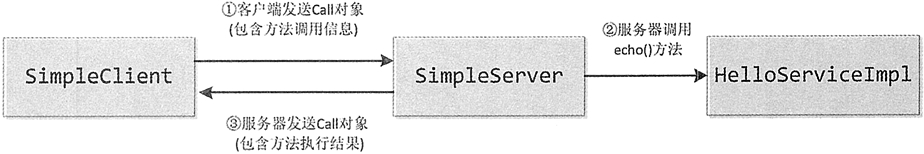

Java在远程方法调用中运用反射机制
上一节详细介绍了如何使用 java.lang.reflect 包提供的 Constructor 类获取构造方法的信息、使用 Method 类获取成员方法的信息以及使用 Field 类获取成员变量的信息。
本案例将介绍反射机制在网络编程中的应用，实现如何在客户端通过远程方法调用服务器端的方法。
假定在服务器端有一个 HelloService 接口，该接口具有 getTime() 和 echo() 方法，具体代码如下：
具体方法是：客户端需要把调用的方法名、方法参数类型、方法参数值，以及方法所属的类名或接口名发送给服务器端。服务器端再调用相关对象的方法，然后把方法的返回值发送给客户端。
为了便于按照面向对象的方式来处理客户端与服务器端的通信，可以把它们发送的信息用 Call 类来表示。一个 Call 对象表示客户端发起的一个远程调用，它包括调用的类名或接口名、方法名、方法参数类型、方法参数值和方法执行结果。
Call 类的实现代码如下：
首先来看看客户端程序 SimpleClient 类的实现代码。
服务器端 SimpleServer 类在收到调用请求之后会使用反射机制动态调用指定对象的指定方法，再将执行结果返回给客户端。
SimpleServer 类的实现代码如下：
本案例将介绍反射机制在网络编程中的应用，实现如何在客户端通过远程方法调用服务器端的方法。
假定在服务器端有一个 HelloService 接口，该接口具有 getTime() 和 echo() 方法，具体代码如下：
import java.util.Date;
public interface HelloService {
public String echo(String msg);
public Date getTime();
}
在服务器上创建一个 HelloServiceImpl 类并实现 HelloService 接口。HelloServiceImpl 类的代码如下：
import java.util.Date;
public class HelloServiceImpl implements HelloService {
@Override
public String echo(String msg) {
return "echo:" + msg;
}
@Override
public Date getTime() {
return new Date();
}
}
上述代码所示，在 HelloServiceImpl 类中对 echo() 方法和 getTime() 方法进行了重写。那么，客户端如何调用服务器端 Hello-ServiceImpl 类中的 getTime() 和 echo() 方法呢？具体方法是：客户端需要把调用的方法名、方法参数类型、方法参数值，以及方法所属的类名或接口名发送给服务器端。服务器端再调用相关对象的方法，然后把方法的返回值发送给客户端。
为了便于按照面向对象的方式来处理客户端与服务器端的通信，可以把它们发送的信息用 Call 类来表示。一个 Call 对象表示客户端发起的一个远程调用，它包括调用的类名或接口名、方法名、方法参数类型、方法参数值和方法执行结果。
Call 类的实现代码如下：
import java.io.Serializable;
public class Call implements Serializable {
private static final long serialVersionUID = 6659953547331194808L;
private String className; // 表示类名或接口名
private String methodName; // 表示方法名
private Class[] paramTypes; // 表示方法参数类型
private Object[] params; // 表示方法参数值
// 表示方法的执行结果
// 如果方法正常执行，则result为方法返回值，如果方法抛出异常，那么result为该异常。
private Object result;
public Call() {
}
public Call(String className, String methodName, Class[] paramTypes, Object[] params) {
this.className = className;
this.methodName = methodName;
this.paramTypes = paramTypes;
this.params = params;
}
public String getClassName() {
return className;
}
public void setClassName(String className) {
this.className = className;
}
public String getMethodName() {
return methodName;
}
public void setMethodName(String methodName) {
this.methodName = methodName;
}
public Class[] getParamTypes() {
return paramTypes;
}
public void setParamTypes(Class[] paramTypes) {
this.paramTypes = paramTypes;
}
public Object[] getParams() {
return params;
}
public void setParams(Object[] params) {
this.params = params;
}
public Object getResult() {
return result;
}
public void setResult(Object result) {
this.result = result;
}
public String toString() {
return "className=" + className + "methodName=" + methodName;
}
}
假设客户端为 SimpleClient，服务器端为 SimpleServer。SimpleClient 调用 SimpleServer 的 HelloServiceImpl 对象中 echo() 方法的流程如下：
- SimpleClient 创建一个 Call 对象，它包含调用 HelloService 接口的 echo() 方法的信息。
- SimpleClient 通过对象输出流把 Call 对象发送给 SimpleServer。
- SimpleServer 通过对象输入流读取 Call 对象，运用反射机制调用 HelloServiceImpl 对象的 echo() 方法，把 echo() 方法的执行结果保存到 Call 对象中。
- SimpleServer 通过对象输出流把包含方法执行结果的 Call 对象发送给 SimpleClient。
- SimpleClient 通过对象输入流读取 Call 对象，从中获得方法执行结果。
首先来看看客户端程序 SimpleClient 类的实现代码。
import java.io.*;
import java.net.*;
import java.util.*;
import java.lang.reflect.*;
import java.io.*;
import java.net.*;
import java.util.*;
public class SimpleClient {
public void invoke() throws Exception {
Socket socket = new Socket("localhost", 8000);
OutputStream out = socket.getOutputStream();
ObjectOutputStream oos = new ObjectOutputStream(out);
InputStream in = socket.getInputStream();
ObjectInputStream ois = new ObjectInputStream(in);
// 创建一个远程调用对象
Call call = new Call("ch12.HelloService", "echo", new Class[] { String.class }, new Object[] { "Java" });
oos.writeObject(call); // 向服务器发送Call对象
call = (Call) ois.readObject(); // 接收包含了方法执行结果的Call对象
System.out.println(call.getResult());
ois.close();
oos.close();
socket.close();
}
public static void main(String args[]) throws Exception {
new SimpleClient().invoke();
}
}
如上述代码所示，客户端 SimpleClient 类的主要作用是建立与服务器的连接，然后将带有调用信息的 Call 对象发送到服务器端。服务器端 SimpleServer 类在收到调用请求之后会使用反射机制动态调用指定对象的指定方法，再将执行结果返回给客户端。
SimpleServer 类的实现代码如下：
import java.io.*;
import java.net.*;
import java.util.*;
import java.lang.reflect.*;
public class SimpleServer {
private Map remoteObjects = new HashMap(); // 存放远程对象的缓存
/** 把一个远程对象放到缓存中 */
public void register(String className, Object remoteObject) {
remoteObjects.put(className, remoteObject);
}
public void service() throws Exception {
ServerSocket serverSocket = new ServerSocket(8000);
System.out.println("服务器启动.");
while (true) {
Socket socket = serverSocket.accept();
InputStream in = socket.getInputStream();
ObjectInputStream ois = new ObjectInputStream(in);
OutputStream out = socket.getOutputStream();
ObjectOutputStream oos = new ObjectOutputStream(out);
Call call = (Call) ois.readObject(); // 接收客户发送的Call对象
System.out.println(call);
call = invoke(call); // 调用相关对象的方法
oos.writeObject(call); // 向客户发送包含了执行结果的Call对象
ois.close();
oos.close();
socket.close();
}
}
public Call invoke(Call call) {
Object result = null;
try {
String className = call.getClassName();
String methodName = call.getMethodName();
Object[] params = call.getParams();
Class classType = Class.forName(className);
Class[] paramTypes = call.getParamTypes();
Method method = classType.getMethod(methodName, paramTypes);
Object remoteObject = remoteObjects.get(className); // 从缓存中取出相关的远程对象
if (remoteObject == null) {
throw new Exception(className + "的远程对象不存在");
} else {
result = method.invoke(remoteObject, params);
}
} catch (Exception e) {
result = e;
}
call.setResult(result); // 设置方法执行结果
return call;
}
public static void main(String args[]) throws Exception {
SimpleServer server = new SimpleServer();
// 把事先创建的HelloServiceImpl对象加入到服务器的缓存中
server.register("ch13.HelloService", new HelloServiceImpl());
server.service();
}
}
由于这是一个网络程序，首先需要运行服务器端 SimpleServer，然后再运行客户端 SimpleClient。运行结果是在客户端看到输出“echoJava”，这个结果是服务器端执行 HelloServicelmpl 对象的 echo() 方法的返回值。图 1 所示显示了 SimpleClient 与 SimpleServer 的通信过程。

图1 SimpleClient与SimpleServer的通信过程
图1 SimpleClient与SimpleServer的通信过程
关注公众号「站长严长生」，在手机上阅读所有教程，随时随地都能学习。内含一款搜索神器，免费下载全网书籍和视频。

微信扫码关注公众号